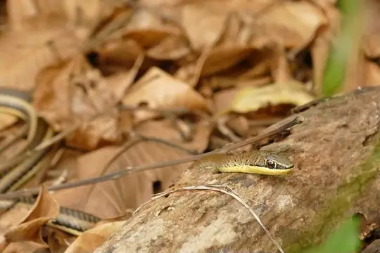

Snakes of Iringa
A state or province of Tanzania
22 snake species are recorded in Iringa, a state or province of Tanzania, in SnakeList: 8 venomous and 14 non-venomous, from 7 families.
- 22species
- 8venomous
- 14non-venomous
- 7families
SnakeList records where snakes live by country and by state or province, not by exact spot, so a species listed here may live in only part of Iringa. All snakes of Tanzania.
Most widely recorded
The species here that have research-grade iNaturalist records in the most places across their whole range - not just in Iringa. That shows how often people have photographed them, not how many live here.
 Puff AdderBitis arietans
Puff AdderBitis arietans Red-lipped SnakeCrotaphopeltis hotamboeia
Red-lipped SnakeCrotaphopeltis hotamboeia Spotted Bush SnakePhilothamnus semivariegatus
Spotted Bush SnakePhilothamnus semivariegatus Common Slug EaterDuberria lutrix
Common Slug EaterDuberria lutrix African Rock PythonPython sebae
African Rock PythonPython sebae Green Water SnakePhilothamnus hoplogaster
Green Water SnakePhilothamnus hoplogaster Black-necked Spitting CobraNaja nigricollis
Black-necked Spitting CobraNaja nigricollis
Eastern Stripe-bellied Sand SnakePsammophis orientalis
Snake families
Venomous and non-venomous
Venomous: 8Non-venomous: 14
7 are listed by SnakeList as dangerous to people: African Rock Python Python sebae, Black-necked Spitting Cobra Naja nigricollis, Eastern Vine Snake Thelotornis mossambicanus, Gaboon Viper Bitis gabonica, Puff Adder Bitis arietans, Snouted Night Adder Causus defilippii, Usambara Eyelash Viper Atheris ceratophora.
The other venomous ones have mild venom: no serious bites to people are documented for them.
Habitats (rough estimate)
How many of its living snakes have each kind of habitat in SnakeList’s estimate. That estimate comes from every country, state and province where each snake is recorded - not from a survey of Iringa, and not checked species by species.
Who described them
The scientists who first described its most widely recorded snakes, and when.
- Puff Adder Bitis arietans -
- Red-lipped Snake Crotaphopeltis hotamboeia -
- Spotted Bush Snake Philothamnus semivariegatus -
- Common Slug Eater Duberria lutrix -
- African Rock Python Python sebae -
- Green Water Snake Philothamnus hoplogaster -
- Black-necked Spitting Cobra Naja nigricollis -
- Eastern Stripe-bellied Sand Snake Psammophis orientalis -
Names and dates come from SnakeList’s reviewed species accounts; the others are looked up on Wikidata (CC0) when this page opens.
Neighbouring states and provinces
Places in SnakeList that share a border with Iringa.
All 22 species
- African Rock Python Python sebae
- Black-necked Spitting Cobra Naja nigricollis venomous
- Brown House Snake (fuliginosus) Boaedon fuliginosus
- Common Slug Eater Duberria lutrix
- Eastern Stripe-bellied Sand Snake Psammophis orientalis venomous
- Eastern Vine Snake Thelotornis mossambicanus venomous
- Gaboon Viper Bitis gabonica venomous
- Green Water Snake Philothamnus hoplogaster
- Grey-bellied Grass Snake Psammophylax variabilis
- Puff Adder Bitis arietans venomous
- Red-lipped Snake Crotaphopeltis hotamboeia
- Red-snouted Wolf Snake Lycophidion uzungwense
- Rufous Beaked Snake Rhamphiophis rostratus
- Shire Slug Eater Duberria shirana
- Snouted Night Adder Causus defilippii venomous
- Spotted Bush Snake Philothamnus semivariegatus
- Tanganyika Sand Snake Psammophis tanganicus venomous
- Tiger Cat Snake Telescopus semiannulatus
- Tornier's Cat Snake Crotaphopeltis tornieri
- Usambara Eyelash Viper Atheris ceratophora venomous
- Usambara Green Snake Philothamnus macrops
- Whyte's Water Snake Lycodonomorphus whytii
No snake here matches that.